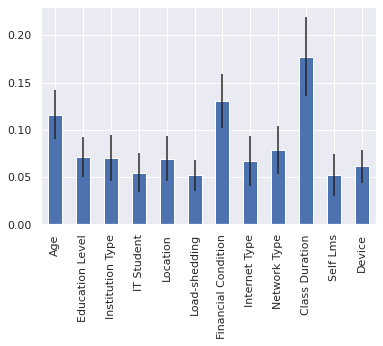

Classificação
Conteúdo
Classificação¶
Nível de Adaptação de Estudantes no EAD¶
https://www.kaggle.com/datasets/mdmahmudulhasansuzan/students-adaptability-level-in-online-education
from utils import carrega_dataset_EAD
dataset = carrega_dataset_EAD()
dataset
| Gender | Age | Education Level | Institution Type | IT Student | Location | Load-shedding | Financial Condition | Internet Type | Network Type | Class Duration | Self Lms | Device | Adaptivity Level | |
|---|---|---|---|---|---|---|---|---|---|---|---|---|---|---|
| 0 | Boy | 21-25 | University | Non Government | No | Yes | Low | Mid | Wifi | 4G | 3-6 | No | Tab | Moderate |
| 1 | Girl | 21-25 | University | Non Government | No | Yes | High | Mid | Mobile Data | 4G | 1-3 | Yes | Mobile | Moderate |
| 2 | Girl | 16-20 | College | Government | No | Yes | Low | Mid | Wifi | 4G | 1-3 | No | Mobile | Moderate |
| 3 | Girl | 11-15 | School | Non Government | No | Yes | Low | Mid | Mobile Data | 4G | 1-3 | No | Mobile | Moderate |
| 4 | Girl | 16-20 | School | Non Government | No | Yes | Low | Poor | Mobile Data | 3G | 0 | No | Mobile | Low |
| ... | ... | ... | ... | ... | ... | ... | ... | ... | ... | ... | ... | ... | ... | ... |
| 1200 | Girl | 16-20 | College | Non Government | No | Yes | Low | Mid | Wifi | 4G | 1-3 | No | Mobile | Low |
| 1201 | Girl | 16-20 | College | Non Government | No | No | High | Mid | Wifi | 4G | 3-6 | No | Mobile | Moderate |
| 1202 | Boy | 11-15 | School | Non Government | No | Yes | Low | Mid | Mobile Data | 3G | 1-3 | No | Mobile | Moderate |
| 1203 | Girl | 16-20 | College | Non Government | No | No | Low | Mid | Wifi | 4G | 1-3 | No | Mobile | Low |
| 1204 | Girl | 11-15 | School | Non Government | No | Yes | Low | Poor | Mobile Data | 3G | 1-3 | No | Mobile | Moderate |
1205 rows × 14 columns
Codificação¶
import pandas as pd
from sklearn.preprocessing import LabelEncoder
codificadores = {coluna: LabelEncoder() for coluna in dataset.columns}
dataset_codificado = pd.DataFrame()
for coluna in dataset:
dataset_codificado[coluna] = codificadores[coluna].fit_transform(dataset[coluna])
dataset_codificado
| Gender | Age | Education Level | Institution Type | IT Student | Location | Load-shedding | Financial Condition | Internet Type | Network Type | Class Duration | Self Lms | Device | Adaptivity Level | |
|---|---|---|---|---|---|---|---|---|---|---|---|---|---|---|
| 0 | 0 | 3 | 2 | 1 | 0 | 1 | 1 | 0 | 1 | 2 | 2 | 0 | 2 | 2 |
| 1 | 1 | 3 | 2 | 1 | 0 | 1 | 0 | 0 | 0 | 2 | 1 | 1 | 1 | 2 |
| 2 | 1 | 2 | 0 | 0 | 0 | 1 | 1 | 0 | 1 | 2 | 1 | 0 | 1 | 2 |
| 3 | 1 | 1 | 1 | 1 | 0 | 1 | 1 | 0 | 0 | 2 | 1 | 0 | 1 | 2 |
| 4 | 1 | 2 | 1 | 1 | 0 | 1 | 1 | 1 | 0 | 1 | 0 | 0 | 1 | 1 |
| ... | ... | ... | ... | ... | ... | ... | ... | ... | ... | ... | ... | ... | ... | ... |
| 1200 | 1 | 2 | 0 | 1 | 0 | 1 | 1 | 0 | 1 | 2 | 1 | 0 | 1 | 1 |
| 1201 | 1 | 2 | 0 | 1 | 0 | 0 | 0 | 0 | 1 | 2 | 2 | 0 | 1 | 2 |
| 1202 | 0 | 1 | 1 | 1 | 0 | 1 | 1 | 0 | 0 | 1 | 1 | 0 | 1 | 2 |
| 1203 | 1 | 2 | 0 | 1 | 0 | 0 | 1 | 0 | 1 | 2 | 1 | 0 | 1 | 1 |
| 1204 | 1 | 1 | 1 | 1 | 0 | 1 | 1 | 1 | 0 | 1 | 1 | 0 | 1 | 2 |
1205 rows × 14 columns
Modelo¶
from sklearn.ensemble import RandomForestClassifier
X = dataset_codificado.iloc[:, 1:13]
modelo = RandomForestClassifier(oob_score=True)
fit = modelo.fit(X, dataset_codificado['Adaptivity Level'])
Importâncias¶
import numpy as np
import seaborn as sns
sns.set_theme()
sns.set_theme("notebook")
sns.set(rc={"figure.figsize": [10, 6]})
desvio_padrao_estimadores = np.std(
[arvore.feature_importances_ for arvore in modelo.estimators_], axis=0)
importancias = pd.Series(modelo.feature_importances_,
index=modelo.feature_names_in_)
importancias.plot.bar(yerr=desvio_padrao_estimadores);

Visualização de uma única árvore¶
from sklearn import tree
tree.plot_tree(modelo.estimators_[0],
feature_names=modelo.feature_names_in_.tolist(),
class_names='Adaptivity Level',
filled=True);

texto = tree.export_text(modelo.estimators_[0],
feature_names=modelo.feature_names_in_.tolist())
print(texto)
|--- Class Duration <= 0.50
| |--- Internet Type <= 0.50
| | |--- Education Level <= 1.50
| | | |--- class: 1.0
| | |--- Education Level > 1.50
| | | |--- Financial Condition <= 0.50
| | | | |--- Age <= 3.50
| | | | | |--- Location <= 0.50
| | | | | | |--- class: 2.0
| | | | | |--- Location > 0.50
| | | | | | |--- class: 1.0
| | | | |--- Age > 3.50
| | | | | |--- class: 1.0
| | | |--- Financial Condition > 0.50
| | | | |--- class: 1.0
| |--- Internet Type > 0.50
| | |--- Education Level <= 0.50
| | | |--- Financial Condition <= 1.00
| | | | |--- class: 2.0
| | | |--- Financial Condition > 1.00
| | | | |--- class: 1.0
| | |--- Education Level > 0.50
| | | |--- Load-shedding <= 0.50
| | | | |--- class: 1.0
| | | |--- Load-shedding > 0.50
| | | | |--- Age <= 2.50
| | | | | |--- class: 1.0
| | | | |--- Age > 2.50
| | | | | |--- Location <= 0.50
| | | | | | |--- class: 2.0
| | | | | |--- Location > 0.50
| | | | | | |--- class: 1.0
|--- Class Duration > 0.50
| |--- Education Level <= 0.50
| | |--- IT Student <= 0.50
| | | |--- Age <= 2.50
| | | | |--- Device <= 0.50
| | | | | |--- class: 2.0
| | | | |--- Device > 0.50
| | | | | |--- Self Lms <= 0.50
| | | | | | |--- Class Duration <= 1.50
| | | | | | | |--- Internet Type <= 0.50
| | | | | | | | |--- Location <= 0.50
| | | | | | | | | |--- Institution Type <= 0.50
| | | | | | | | | | |--- Financial Condition <= 0.50
| | | | | | | | | | | |--- truncated branch of depth 3
| | | | | | | | | | |--- Financial Condition > 0.50
| | | | | | | | | | | |--- truncated branch of depth 2
| | | | | | | | | |--- Institution Type > 0.50
| | | | | | | | | | |--- Network Type <= 1.50
| | | | | | | | | | | |--- class: 2.0
| | | | | | | | | | |--- Network Type > 1.50
| | | | | | | | | | | |--- class: 1.0
| | | | | | | | |--- Location > 0.50
| | | | | | | | | |--- Network Type <= 1.50
| | | | | | | | | | |--- class: 1.0
| | | | | | | | | |--- Network Type > 1.50
| | | | | | | | | | |--- class: 2.0
| | | | | | | |--- Internet Type > 0.50
| | | | | | | | |--- Institution Type <= 0.50
| | | | | | | | | |--- Network Type <= 1.50
| | | | | | | | | | |--- class: 2.0
| | | | | | | | | |--- Network Type > 1.50
| | | | | | | | | | |--- Location <= 0.50
| | | | | | | | | | | |--- class: 1.0
| | | | | | | | | | |--- Location > 0.50
| | | | | | | | | | | |--- truncated branch of depth 2
| | | | | | | | |--- Institution Type > 0.50
| | | | | | | | | |--- Location <= 0.50
| | | | | | | | | | |--- class: 1.0
| | | | | | | | | |--- Location > 0.50
| | | | | | | | | | |--- Load-shedding <= 0.50
| | | | | | | | | | | |--- class: 1.0
| | | | | | | | | | |--- Load-shedding > 0.50
| | | | | | | | | | | |--- class: 1.0
| | | | | | |--- Class Duration > 1.50
| | | | | | | |--- Institution Type <= 0.50
| | | | | | | | |--- class: 2.0
| | | | | | | |--- Institution Type > 0.50
| | | | | | | | |--- Location <= 0.50
| | | | | | | | | |--- class: 2.0
| | | | | | | | |--- Location > 0.50
| | | | | | | | | |--- Load-shedding <= 0.50
| | | | | | | | | | |--- class: 2.0
| | | | | | | | | |--- Load-shedding > 0.50
| | | | | | | | | | |--- class: 2.0
| | | | | |--- Self Lms > 0.50
| | | | | | |--- Location <= 0.50
| | | | | | | |--- class: 1.0
| | | | | | |--- Location > 0.50
| | | | | | | |--- class: 2.0
| | | |--- Age > 2.50
| | | | |--- class: 1.0
| | |--- IT Student > 0.50
| | | |--- Age <= 2.50
| | | | |--- Device <= 1.50
| | | | | |--- Self Lms <= 0.50
| | | | | | |--- class: 2.0
| | | | | |--- Self Lms > 0.50
| | | | | | |--- class: 1.0
| | | | |--- Device > 1.50
| | | | | |--- class: 2.0
| | | |--- Age > 2.50
| | | | |--- class: 2.0
| |--- Education Level > 0.50
| | |--- Institution Type <= 0.50
| | | |--- Network Type <= 1.50
| | | | |--- Financial Condition <= 0.50
| | | | | |--- Age <= 1.50
| | | | | | |--- class: 1.0
| | | | | |--- Age > 1.50
| | | | | | |--- Network Type <= 0.50
| | | | | | | |--- class: 1.0
| | | | | | |--- Network Type > 0.50
| | | | | | | |--- IT Student <= 0.50
| | | | | | | | |--- Location <= 0.50
| | | | | | | | | |--- class: 1.0
| | | | | | | | |--- Location > 0.50
| | | | | | | | | |--- class: 2.0
| | | | | | | |--- IT Student > 0.50
| | | | | | | | |--- Self Lms <= 0.50
| | | | | | | | | |--- Device <= 0.50
| | | | | | | | | | |--- class: 1.0
| | | | | | | | | |--- Device > 0.50
| | | | | | | | | | |--- Location <= 0.50
| | | | | | | | | | | |--- class: 2.0
| | | | | | | | | | |--- Location > 0.50
| | | | | | | | | | | |--- class: 1.0
| | | | | | | | |--- Self Lms > 0.50
| | | | | | | | | |--- class: 2.0
| | | | |--- Financial Condition > 0.50
| | | | | |--- class: 1.0
| | | |--- Network Type > 1.50
| | | | |--- IT Student <= 0.50
| | | | | |--- Device <= 0.50
| | | | | | |--- Class Duration <= 1.50
| | | | | | | |--- class: 2.0
| | | | | | |--- Class Duration > 1.50
| | | | | | | |--- class: 1.0
| | | | | |--- Device > 0.50
| | | | | | |--- Self Lms <= 0.50
| | | | | | | |--- Age <= 2.50
| | | | | | | | |--- Financial Condition <= 1.00
| | | | | | | | | |--- Age <= 1.50
| | | | | | | | | | |--- Internet Type <= 0.50
| | | | | | | | | | | |--- class: 2.0
| | | | | | | | | | |--- Internet Type > 0.50
| | | | | | | | | | | |--- class: 0.0
| | | | | | | | | |--- Age > 1.50
| | | | | | | | | | |--- Location <= 0.50
| | | | | | | | | | | |--- class: 2.0
| | | | | | | | | | |--- Location > 0.50
| | | | | | | | | | | |--- truncated branch of depth 2
| | | | | | | | |--- Financial Condition > 1.00
| | | | | | | | | |--- Location <= 0.50
| | | | | | | | | | |--- class: 0.0
| | | | | | | | | |--- Location > 0.50
| | | | | | | | | | |--- class: 2.0
| | | | | | | |--- Age > 2.50
| | | | | | | | |--- Load-shedding <= 0.50
| | | | | | | | | |--- class: 2.0
| | | | | | | | |--- Load-shedding > 0.50
| | | | | | | | | |--- Financial Condition <= 0.50
| | | | | | | | | | |--- Internet Type <= 0.50
| | | | | | | | | | | |--- truncated branch of depth 3
| | | | | | | | | | |--- Internet Type > 0.50
| | | | | | | | | | | |--- truncated branch of depth 2
| | | | | | | | | |--- Financial Condition > 0.50
| | | | | | | | | | |--- class: 1.0
| | | | | | |--- Self Lms > 0.50
| | | | | | | |--- Education Level <= 1.50
| | | | | | | | |--- class: 1.0
| | | | | | | |--- Education Level > 1.50
| | | | | | | | |--- Internet Type <= 0.50
| | | | | | | | | |--- class: 2.0
| | | | | | | | |--- Internet Type > 0.50
| | | | | | | | | |--- class: 1.0
| | | | |--- IT Student > 0.50
| | | | | |--- Location <= 0.50
| | | | | | |--- class: 2.0
| | | | | |--- Location > 0.50
| | | | | | |--- Financial Condition <= 1.00
| | | | | | | |--- class: 1.0
| | | | | | |--- Financial Condition > 1.00
| | | | | | | |--- class: 0.0
| | |--- Institution Type > 0.50
| | | |--- Network Type <= 1.50
| | | | |--- Education Level <= 1.50
| | | | | |--- IT Student <= 0.50
| | | | | | |--- Financial Condition <= 0.50
| | | | | | | |--- Age <= 3.00
| | | | | | | | |--- Location <= 0.50
| | | | | | | | | |--- class: 1.0
| | | | | | | | |--- Location > 0.50
| | | | | | | | | |--- class: 2.0
| | | | | | | |--- Age > 3.00
| | | | | | | | |--- Internet Type <= 0.50
| | | | | | | | | |--- class: 2.0
| | | | | | | | |--- Internet Type > 0.50
| | | | | | | | | |--- class: 0.0
| | | | | | |--- Financial Condition > 0.50
| | | | | | | |--- Financial Condition <= 1.50
| | | | | | | | |--- Internet Type <= 0.50
| | | | | | | | | |--- Age <= 3.00
| | | | | | | | | | |--- class: 1.0
| | | | | | | | | |--- Age > 3.00
| | | | | | | | | | |--- class: 1.0
| | | | | | | | |--- Internet Type > 0.50
| | | | | | | | | |--- class: 2.0
| | | | | | | |--- Financial Condition > 1.50
| | | | | | | | |--- class: 2.0
| | | | | |--- IT Student > 0.50
| | | | | | |--- class: 2.0
| | | | |--- Education Level > 1.50
| | | | | |--- Load-shedding <= 0.50
| | | | | | |--- Financial Condition <= 0.50
| | | | | | | |--- Device <= 0.50
| | | | | | | | |--- Location <= 0.50
| | | | | | | | | |--- class: 1.0
| | | | | | | | |--- Location > 0.50
| | | | | | | | | |--- class: 2.0
| | | | | | | |--- Device > 0.50
| | | | | | | | |--- Location <= 0.50
| | | | | | | | | |--- Age <= 3.50
| | | | | | | | | | |--- Class Duration <= 1.50
| | | | | | | | | | | |--- class: 2.0
| | | | | | | | | | |--- Class Duration > 1.50
| | | | | | | | | | | |--- class: 0.0
| | | | | | | | | |--- Age > 3.50
| | | | | | | | | | |--- class: 2.0
| | | | | | | | |--- Location > 0.50
| | | | | | | | | |--- class: 2.0
| | | | | | |--- Financial Condition > 0.50
| | | | | | | |--- Age <= 2.50
| | | | | | | | |--- class: 2.0
| | | | | | | |--- Age > 2.50
| | | | | | | | |--- Internet Type <= 0.50
| | | | | | | | | |--- Age <= 3.50
| | | | | | | | | | |--- Class Duration <= 1.50
| | | | | | | | | | | |--- truncated branch of depth 2
| | | | | | | | | | |--- Class Duration > 1.50
| | | | | | | | | | | |--- class: 2.0
| | | | | | | | | |--- Age > 3.50
| | | | | | | | | | |--- class: 2.0
| | | | | | | | |--- Internet Type > 0.50
| | | | | | | | | |--- Location <= 0.50
| | | | | | | | | | |--- class: 1.0
| | | | | | | | | |--- Location > 0.50
| | | | | | | | | | |--- Device <= 0.50
| | | | | | | | | | | |--- class: 2.0
| | | | | | | | | | |--- Device > 0.50
| | | | | | | | | | | |--- class: 1.0
| | | | | |--- Load-shedding > 0.50
| | | | | | |--- Age <= 2.50
| | | | | | | |--- Class Duration <= 1.50
| | | | | | | | |--- class: 1.0
| | | | | | | |--- Class Duration > 1.50
| | | | | | | | |--- class: 2.0
| | | | | | |--- Age > 2.50
| | | | | | | |--- IT Student <= 0.50
| | | | | | | | |--- Self Lms <= 0.50
| | | | | | | | | |--- class: 2.0
| | | | | | | | |--- Self Lms > 0.50
| | | | | | | | | |--- class: 0.0
| | | | | | | |--- IT Student > 0.50
| | | | | | | | |--- Class Duration <= 1.50
| | | | | | | | | |--- Location <= 0.50
| | | | | | | | | | |--- class: 2.0
| | | | | | | | | |--- Location > 0.50
| | | | | | | | | | |--- Self Lms <= 0.50
| | | | | | | | | | | |--- class: 2.0
| | | | | | | | | | |--- Self Lms > 0.50
| | | | | | | | | | | |--- truncated branch of depth 3
| | | | | | | | |--- Class Duration > 1.50
| | | | | | | | | |--- Device <= 0.50
| | | | | | | | | | |--- class: 1.0
| | | | | | | | | |--- Device > 0.50
| | | | | | | | | | |--- class: 2.0
| | | |--- Network Type > 1.50
| | | | |--- Internet Type <= 0.50
| | | | | |--- Self Lms <= 0.50
| | | | | | |--- Financial Condition <= 1.50
| | | | | | | |--- Age <= 0.50
| | | | | | | | |--- Financial Condition <= 0.50
| | | | | | | | | |--- class: 2.0
| | | | | | | | |--- Financial Condition > 0.50
| | | | | | | | | |--- class: 2.0
| | | | | | | |--- Age > 0.50
| | | | | | | | |--- Class Duration <= 1.50
| | | | | | | | | |--- Financial Condition <= 0.50
| | | | | | | | | | |--- IT Student <= 0.50
| | | | | | | | | | | |--- truncated branch of depth 3
| | | | | | | | | | |--- IT Student > 0.50
| | | | | | | | | | | |--- class: 2.0
| | | | | | | | | |--- Financial Condition > 0.50
| | | | | | | | | | |--- class: 2.0
| | | | | | | | |--- Class Duration > 1.50
| | | | | | | | | |--- class: 2.0
| | | | | | |--- Financial Condition > 1.50
| | | | | | | |--- class: 0.0
| | | | | |--- Self Lms > 0.50
| | | | | | |--- Location <= 0.50
| | | | | | | |--- Financial Condition <= 0.50
| | | | | | | | |--- class: 2.0
| | | | | | | |--- Financial Condition > 0.50
| | | | | | | | |--- class: 1.0
| | | | | | |--- Location > 0.50
| | | | | | | |--- Load-shedding <= 0.50
| | | | | | | | |--- class: 2.0
| | | | | | | |--- Load-shedding > 0.50
| | | | | | | | |--- class: 0.0
| | | | |--- Internet Type > 0.50
| | | | | |--- Load-shedding <= 0.50
| | | | | | |--- IT Student <= 0.50
| | | | | | | |--- Age <= 2.00
| | | | | | | | |--- Financial Condition <= 0.50
| | | | | | | | | |--- class: 2.0
| | | | | | | | |--- Financial Condition > 0.50
| | | | | | | | | |--- class: 1.0
| | | | | | | |--- Age > 2.00
| | | | | | | | |--- class: 1.0
| | | | | | |--- IT Student > 0.50
| | | | | | | |--- Class Duration <= 1.50
| | | | | | | | |--- Location <= 0.50
| | | | | | | | | |--- class: 2.0
| | | | | | | | |--- Location > 0.50
| | | | | | | | | |--- Device <= 0.50
| | | | | | | | | | |--- class: 0.0
| | | | | | | | | |--- Device > 0.50
| | | | | | | | | | |--- class: 1.0
| | | | | | | |--- Class Duration > 1.50
| | | | | | | | |--- class: 1.0
| | | | | |--- Load-shedding > 0.50
| | | | | | |--- Self Lms <= 0.50
| | | | | | | |--- Financial Condition <= 1.50
| | | | | | | | |--- Device <= 1.50
| | | | | | | | | |--- Age <= 1.50
| | | | | | | | | | |--- Device <= 0.50
| | | | | | | | | | | |--- class: 2.0
| | | | | | | | | | |--- Device > 0.50
| | | | | | | | | | | |--- truncated branch of depth 3
| | | | | | | | | |--- Age > 1.50
| | | | | | | | | | |--- Age <= 2.50
| | | | | | | | | | | |--- truncated branch of depth 2
| | | | | | | | | | |--- Age > 2.50
| | | | | | | | | | | |--- truncated branch of depth 4
| | | | | | | | |--- Device > 1.50
| | | | | | | | | |--- class: 2.0
| | | | | | | |--- Financial Condition > 1.50
| | | | | | | | |--- IT Student <= 0.50
| | | | | | | | | |--- Class Duration <= 1.50
| | | | | | | | | | |--- class: 2.0
| | | | | | | | | |--- Class Duration > 1.50
| | | | | | | | | | |--- Education Level <= 1.50
| | | | | | | | | | | |--- class: 0.0
| | | | | | | | | | |--- Education Level > 1.50
| | | | | | | | | | | |--- truncated branch of depth 2
| | | | | | | | |--- IT Student > 0.50
| | | | | | | | | |--- Device <= 0.50
| | | | | | | | | | |--- class: 2.0
| | | | | | | | | |--- Device > 0.50
| | | | | | | | | | |--- class: 1.0
| | | | | | |--- Self Lms > 0.50
| | | | | | | |--- Financial Condition <= 1.00
| | | | | | | | |--- IT Student <= 0.50
| | | | | | | | | |--- class: 2.0
| | | | | | | | |--- IT Student > 0.50
| | | | | | | | | |--- Device <= 0.50
| | | | | | | | | | |--- Location <= 0.50
| | | | | | | | | | | |--- class: 2.0
| | | | | | | | | | |--- Location > 0.50
| | | | | | | | | | | |--- truncated branch of depth 3
| | | | | | | | | |--- Device > 0.50
| | | | | | | | | | |--- class: 2.0
| | | | | | | |--- Financial Condition > 1.00
| | | | | | | | |--- class: 0.0